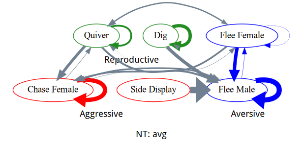

Background
- Originates in Lake Tanganyika, Tanzinia
- Two Color-morphs: Yellow and Blue
- Color linked to behavioral differences
- (bright color associated with dominance)
Aim:
- Identify differences in behavior for:
- Dominant vs. Subordinate
- Blue vs. Yellow
- Quantify color differences (blue vs. yellow)
Behavior analysis: data
Methods: Markov chain modeling
Data transformations
- Time in behavior
Data transformations
- Transitions
Markov chain visualization: (Territorial) Dominant
Markov chain visualization: (Non-Territorial) Subordinate

Markov chain: plots T vs NT
Markov chain visualization: Yellow

Markov chain visualization: Blue
Markov chain: plots
AIM 2: Quantification of color
- We want to quantify color differences because color is linked to behavior
Quantification of color: Color representation
- (\(\mathrm{R}_{\text{ed}},\mathrm{G}_{\text{reen}}, \mathrm{B}_{\text{lue}}\)):=(1, 0, 0)
Quantification of color: Color representation
- (\(\mathrm{R}_{\text{ed}},\mathrm{G}_{\text{reen}}, \mathrm{B}_{\text{lue}}\)):=(0, 1, 0)
Quantification of color: Color representation
- (\(\mathrm{R}_{\text{ed}},\mathrm{G}_{\text{reen}}, \mathrm{B}_{\text{lue}}\)):=(0, 0, 1)
Quantification of color: Color representation
- (\(\mathrm{R}_{\text{ed}},\mathrm{G}_{\text{reen}}, \mathrm{B}_{\text{lue}}\)):=(0, 0, 0)
Quantification of color: Color representation
- (\(\mathrm{R}_{\text{ed}},\mathrm{G}_{\text{reen}}, \mathrm{B}_{\text{lue}}\)):=(1, 1, 1)
Quantification of color: Color representation
- (\(\mathrm{H}_{\text{ue}},\mathrm{S}_{\text{aturation}},\mathrm{V}_{\text{alue}})\)

Quantification of color: Color representation
- …and many more
Quantification of color: Color representation, why?
- Though data is the same, the type of representation makes certain situations easier
Quantification of color: Color representation, why?
- Though data is the same, the type of representation makes certain situations easier
Quantification of color: Graphical interface
Interface
Interface

selecting a color range
Quantification of color: extracting image
Masking an image
Masking an image
Quantification of color: Histogram
Quantification of color: Kolmogorov-Smirnov test
Quantification of color: Mann-Whitney U test
Conclusion
- Markov chains paired with bar plots allow us to analyze behaviors within a given timeframe
- Color analysis interface allows us to understand differences between two color-morphs
Future work
- More data
- Automated segmenting of photos from an image
- Automated behavioral annotations from videos
Special thanks
- National Institutes of Health Sciences
- MARC U STAR
- Dr. Alvarado
- Alvarado-Tajerian Lab
References:
- Hugrass, L., Slavikova, J., Horvat, M., Musawi, A. A., & Crewther, D. (2017). Temporal brightness illusion changes color perception of “the dress.” Journal of Vision, 17(5), 6. https://doi.org/10.1167/17.5.6
- Rodriguez-Santiago, M., Nührenberg, P., Derry, J., Deussen, O., Francisco, F. A., Garrison, L. K., Garza, S. F., Hofmann, H. A., & Jordan, A. (2020). Behavioral traits that define social dominance are the same that reduce social influence in a consensus task. Proceedings of the National Academy of Sciences, 117(31), 18566–18573. https://doi.org/10.1073/pnas. 2000158117
- Stranburg-Peshkin, A., Farine, D. R., Couzin, I. D. & Crofoot, M. C. Shared decision-making
- HSV image: https://yeun.github.io/images/2016-03-21/
- olor cube: http://matlab.izmiran.ru/help/toolbox/images/color4.html
- backscatter: http://www.empiricalimaging.com/knowledge-base/underwater-photography/